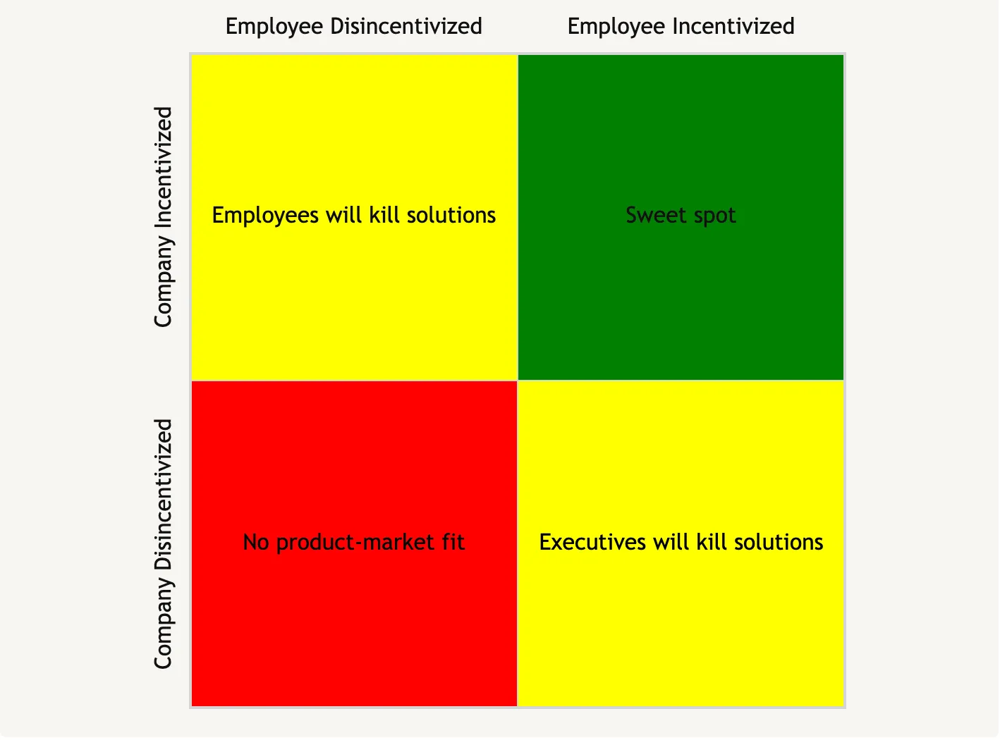

B2B founders are often told to build solutions that cut costs or drive revenue for businesses or to solve severe pain for a particular employee within a business, but this advice is overly simplistic. When you’re building a B2B SaaS, you’re selling to employees and companies that can have conflicting incentives. When those conflicting incentives intersect with your value prop, you’ll face serious headwinds to growth, even if your solution drives revenue, cuts costs, or solves pain for an employee.
Here are the four possible states your value prop can be in vis-a-vis employee and company incentives:

The bottom left quadrant isn’t interesting, but below, we’ll first unpack these other quadrants with examples and explore how these incentives shift over the life of a company and affect B2B SaaS product growth rates.
When employees will kill solutions
Executives want to adopt software that drives revenue and cuts costs, but when employees see that software as a threat to their job — or even to aspects of their job that they enjoy — they won’t look for solutions or actively block solutions from reaching an buyer.
This happened at a previous job when we needed to rebuild a piece of our product. I pointed out a vendor we could have used, but the engineering team couldn’t be bothered to talk to a sales person. They would rather rebuild the functionality because it was an interesting technical challenge and because they could leverage their work on the project as ammunition for a promotion when performance reviews came around. Of course, they didn’t explicitly think to themselves, “I don’t care about the business. I just want interesting problems and a raise,” but their incentives lead them down a path that was suboptimal for the business.
When executives will kill solutions
Employees adopt software when it automates away an aspect of their job they don’t enjoy or don’t stand to be promoted for doing. This software doesn’t necessarily drive revenue or cut costs for the business and when this becomes clear, executes will kill off software that has grass roots adoption.
We saw this when we interviewed a marketing leader who was complaining about the proliferation of different types of project management software at her company. Different teams had different solutions they preferred, but the advantages of each solution for a particular team didn’t justify the cost and overhead of having multiple solutions. Leaders in this situation will work to kill off solutions that employees have brought into the company.
Another classic example of this is the perennial technical debt debate between engineers and management. While technical debt is a real issue, a large percentage of what gets labeled as “technical debt” is just engineers complaining about code that isn’t fun to work in. It’s written in an old framework that’s not as shiny or the code is just a pain the ass to work with. Engineers will try to justify a rewrite to avoid the yucky code, but often times the ROI for the business just isn’t there. Executives will kill these rewrite projects and nicely tell the engineer to STFU and deal with the shit code.
Sweet Spot
The hugely successful B2B SaaS companies built stuff that employees and companies were both strongly incentivized to adopt. This means that — with one notable exception we’ll discuss below — successful B2B SaaS companies don’t try to directly replace employees or parts of an employees job that they like.
Stipe is a great example here. Developers didn’t want to engage in the schlep of dealing with credit card payment infrastructure so they were happy to find a vendor. Infrastructure for getting paid, moreover, was essential for businesses.
Twilio is another example. SMS infra was a schlep. Businesses needed to reach customers via SMS to market to them. Boom. Now they have a 13B dollar dollar market cap.
Salesforce is another example. They didn’t try to replace reps or sales managers. They gave sales managers a way to predict revenue with a slick dashboard instead of manually calling their reps or managing things in a spreadsheet which was hugely useful for their promotion and hugely useful for executives who are trying to manage investor expectations around quarterly revenue.
How these incentives shift over the life of a company
As companies grow, they will hire employees to solve every important problem that doesn’t already have a software-based solution. Once that employee is hired, they can kill off solutions that attempt to replace them or aspects of their job that they like. Before that employee is hired, however, B2B SaaS startups have an opportunity to pre-empt that employee’s hire or to shape the responsibilities of the hire that addresses related problems that aren’t solved by the SaaS. This means that B2B SaaS companies that can sell to startups before they grow into large ones have a distinct advantage over ones that can’t.
A classic example here is AWS and other cloud providers. Most of their success comes from selling to startups who grow into massive customers. This is why they have a startup program. On the other hand, many enterprises that existed before AWS still have on-prem infrastructure. Their existing IT employees sabatoge cloud vendor sales reps.